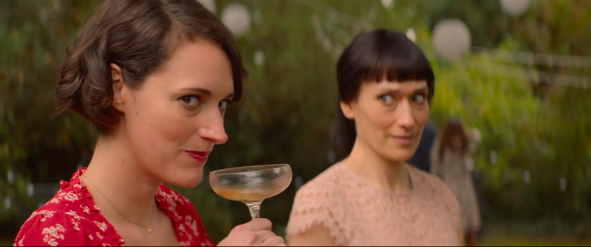
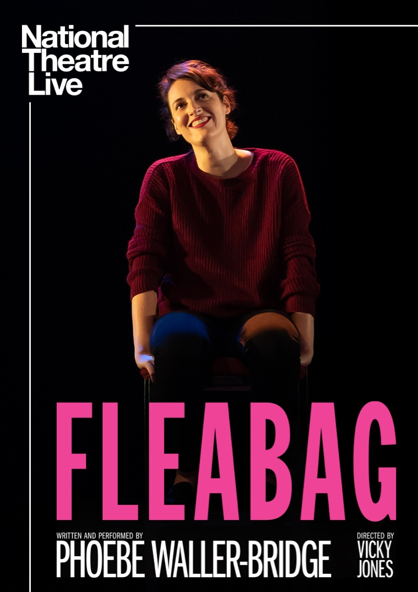

About
Fleabag is a British comedy-drama television series created and written by Phoebe Waller-Bridge, based on her one-woman show first performed in 2013 at the Edinburgh Fringe Festival. It was originally produced by Two Brothers Pictures for digital channel BBC Three in a co-production agreement with Amazon Studios. Waller-Bridge stars as the title character, a free-spirited but angry and confused young woman in London. Sian Clifford stars as Fleabag's sister Claire, while Andrew Scott joined the cast in the second series as 'The Priest'. The protagonist frequently breaks the fourth wall to provide exposition, internal monologues, and a running commentary to the audience.
The show premiered on July 21, 2016 and concluded its second and final series on April 8, 2019. It received widespread acclaim from critics, particularly for its writing, acting, and the uniqueness and personality of the title character. Many critics and viewers have called it one of the greatest comedy series of all time. Waller-Bridge won the British Academy Television Award for Best Female Comedy Performance for the first series. The second series received 11 Primetime Emmy Award nominations and won six, with Waller-Bridge earning Outstanding Comedy Series, Outstanding Lead Actress, and Outstanding Writing for a Comedy Series; additional acting nominations were received by Clifford, Olivia Colman, and guest stars Fiona Shaw and Kristin Scott Thomas. The series received the Golden Globe Award for Best Television Series and Best Actress for Waller-Bridge, and a nomination for Scott.
Background
The show is adapted from Waller-Bridge's 2013 Edinburgh Festival Fringe one-woman play of the same name which won a Fringe First Award. The initial idea of the character of Fleabag came from a challenge by a friend, where Waller-Bridge was given the task of creating a sketch for a 10-minute section in a stand-up storytelling night.
Written and performed by Phoebe Waller-Bridge (Fleabag, Killing Eve) and directed by Vicky Jones, Fleabag is a rip-roaring look at some sort of woman living her sort of life. Following a box-office record-breaking run in cinemas in 2019, the one-woman show returns to cinemas to the big screen this summer.
Fleabag may seem oversexed, emotionally unfiltered and self-obsessed, but that's just the tip of the iceberg. With family and friendships under strain and a guinea pig café struggling to keep afloat, Fleabag suddenly finds herself with nothing to lose.
The hilarious, award-winning play that inspired the BBC’s hit TV series Fleabag, was captured live on stage from London’s West End in 2019.
Presented by DryWrite, Soho Theatre and Annapurna Theatre.
Favorite Episodes
- Season 1 Episode 4
Summary: Courtesy of their father, Fleabag and Claire reluctantly visit a female-only silent retreat, where they frequently break the rule of silence. Fleabag admits to Claire that she stole the sculpture, and Claire asks her to return it. At the retreat, Fleabag runs into Bank Manager, who is attending a neighbouring workshop following a sexual harassment scandal at work. The two bond over their shared unhappiness. Claire reveals that she has been promoted to a lucrative position in Finland, but considers turning it down for the sake of her family. Fleabag attempts to persuade her to take the job by telling her of Martin's behaviour at the party.
- Season 2 Episode 4
Summary: The priest and Fleabag's pleasant day together ends on an unhappy note when she rebuffs his attempt at getting to know her more and helping with her troubles. She looks back on her painful memories of her mother's funeral. At night, Fleabag goes to pray at the church, where she meets the drunken priest and they establish a closer bond. After Fleabag's confession, they succumb to a moment of passion but the priest has second thoughts and is unable to carry through.